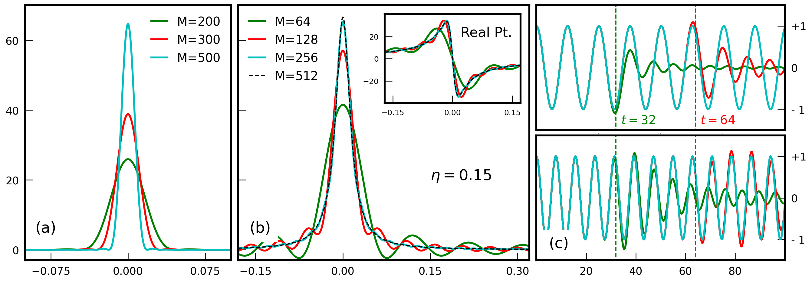

Here, we briefly introduce the main concepts underlying all spectral methods currently implemented in KITE.
The focus is placed on the role of the simulation parameters that can be adjusted by the end user in order to suit their specific purposes.
The central object to any calculation done in KITE is the lattice single-particle Hamiltonian (SPH) — \(H\) — which is
always a sparse \(D\!\times\!D\) hermitian matrix (\(D\) being the total number of orbitals in the lattice).
This fully embodies the simulated system, from its underlying bravais lattice structure and local orbital basis,
to all the non-periodic terms that realize disordered potentials, specific boundary conditions,
complex structural defects and external magnetic fields.
Any finite-dimensional SPH has a bounded real-valued spectrum which must be shifted and rescaled to suitably fit within \([-1,1]\), the convergence interval of the method. This conversion is performed internally by KITE, which transforms \(H\to\mathcal{H}=(H\!-\!\varepsilon_{0})/\delta\varepsilon\) and rescales all energy variables by \(\delta\varepsilon\).
This step requires an early (over)estimation of \(H\)'s spectral bandwidth, which can be set manually (using spectrum_range = \([\,\varepsilon_{0}\!-\!\delta\varepsilon/2\),\(\,\varepsilon_{0}\!+\!\delta\varepsilon/2]\) in kite.Configuration()), or be automatically done by KITE upon generation of the hdf5 configuration file. At this stage, the user must also specify:
The dimensions of the simulated lattice, length=[lx,ly,(lz)];
The number of subdivisions for parallelization of the matrix-vector operation, divisions=[nx,ny,(nz)],
where \(n_{x}n_{y}n_{z}\) (or \(n_{x}n_{y}\) for 2D models) is the available CPU-cores;
The type of boundary conditions;
The type of data to be handled in internal arithmetic operations (for further information see Settings).
Generally, a target function \(\mathcal{Q}\) evaluated by KITEx fits one of the following forms:
where \(\mathcal{O}_{j}\) are sparse lattice operators (e.g., identities, velocity operators or spin operators) and \(F_{j}\) are functions of \(\mathcal{H}\), as well as other scalar parameters
\(\left\{ \lambda_{i}^{j}\right\} _{i=i_{min},...,i_{max}}^{j=1,...,N}\), such as the temperature or frequency. Furthermore, the \(\left|\Psi\right\rangle\) in the second line of the above equation is a specific state/basis vector that depends on the observable that is being computed. Hence, there are two distinct categories of observables that can be computed with KITEx, as shown below.
Complete traces of operators are needed to investigate global observables, such as the Density of States (DoS) and DC-conductivity, as well as the \(1^{\text{st}}\)- and \(2^{\text{nd}}\)-order optical conductivity (see João et al.1 for further details). For all these cases, the trace is evaluated stochastically as an average of expectation values for \(R\) normalized random vectors2, i.e.,
Within the user interface, the number of independent random vectors is specified by the parameter num_random, which must be large enough to ensure a well-estimated trace. The associated error scales as \(1/\sqrt{R\,D}\), and thus requires very few random vectors if the simulated system is very large2. On top of this averaging, if \(\mathcal{H}\) has some random component (e.g., by hosting disorder or featuring randomly twisted boundaries), it is often the case that the results need to be averaged over an ensemble of random Hamiltonians. Such averaging is also done inside KITEx and the number of random configurations is specified by user with the parameter num_disorder.
This class of target functions includes local observables such as the local density of states (LDoS) and the \(\mathbf{k}\)-space spectral function (for ARPES's response), as well as the time-evolution of Gaussian wave-packets. Note that num_random is no longer a relevant parameter for these target functions.
In both classes, the core of the method is to expand the functions \(F_{j}\) as a truncated Chebyshev series of \(\mathcal{H}\), which allows one to write
where \(T_{n}(x)\) are Chebyshev polynomials of the \(1^{\text{st}}\)-kind and \(G_{j}\) are the expansion coefficients of \(F_{j}\). The advantage gained by using the Chebyshev expansion is that both \(\text{Tr}\left[\cdots\right]\) and \(\left\langle\Psi\right|\cdots \left|\Psi\right\rangle\) can be evaluated recursively using only matrix-vector operations1. For all observables implemented in KITE, the functions \(F_{j}\) are of three types:
For these functions, analytical forms of the Chebyshev expansion coefficients are known234567 and used in KITE. In the user interface, the truncation order \(M\) is specified by the parameter num_moments, and always impacts the validity of the expanded results. Nevertheless, its precise effect depends crucially on the specific case, as shown in Fig. 1 below. We will now discuss three common cases.
An order-\(M\) expansion (regularized by the Jackson kernel) produces a Gaussian approximation of \(\delta(\lambda\!-\!\mathcal{H})\) endowed by a width \(\sigma_{\lambda}\!\approx\!\delta \varepsilon\,\pi/M\) in \(\lambda\)27.
The choice of \(M\) then fixes the effective spectral width, \(\sigma_{\lambda}\), which must be sufficiently narrow to accurately describe all relevant features of the calculated property.
However, if \(\sigma_{\lambda}\) becomes too narrow (\(M\) too high), the discrete eigenvalues of the SPH are well-resolved and the obtained data suffers from large (finite-size) fluctuations. For information on other available kernels see Weisse et al.2.
Rule of Thumb
If \(\Delta\varepsilon\) is the mean-level spacing of the simulated system, then \(M\) must be kept smaller than\(\frac{\pi\,\delta\varepsilon}{\Delta\varepsilon}\) in order to avoid resolving individual energy levels. Simultaneously, for obtaining high-resolution results, the artificial broadening must remain much smaller than the lattice bandwidth.
No kernel is required for lattice Green's functions 34. Note that these functions must be broadened by a finite \(\eta\) due to the discrete nature of the energy spectrum of finite systems. An exact spectral decomposition of broadened lattice Green's functions exists and is the basis of the Chebyshev polynomial Green's function method 3 implemented in KITE. Provided \(\eta\) exceeds the spacing between eigenvalues of the SPH, the truncation order may be arbitrarily increased, and convergence is achieved when the data ceases to depend on M.
Rule of Thumb
Since the energy resolution is fixed by \(\eta\), the number of polynomials must be larger enough to resolve such a broadening. As shown below in Fig. 1(b), an apt rule of thumb is to have \(M \gtrsim 10*\delta \varepsilon / \eta\).
In time evolution problems, Chebyshev truncation errors propagate and limit the computation accuracy after some finite time has elapsed.
In Fig. 1(c), it is demonstrated that the time evolution operator is converged as long as \(t\!\lesssim\!\hbar\,M/\delta\varepsilon\).
Rule of Thumb
A safe empirical rule of thumb (used in Santos Pires et al.6) is to have \(M\!\gtrsim\!8\,\delta\varepsilon\,\hbar^{-1}t_{\text{max}}\!\!\), where \(t\!<\!t_{\text{max}}\) is the length of the time-interval intended for the evolution.
For some target functions, the output of KITEx will span energy and spatial coordinates (as is the case with the LDoS or the spectral function).
Note that some response functions (such as the transverse conductivity) will reflect the properties of both the Fermi surface and the Fermi sea of occupied states, and therefore require the raw output of KITE to be numerically integrated over energy. This integration procedure is always done at the post-processing level by KITE-tools.
Post-Processing Integration
For target functions that require energy integrations, a key parameter is the number of energy points for which the integrand is evaluated. In order to adjust it at the post-processing level, the user can use the -E flag of the KITE-tools executable.

Figure 1: Convergence of the Chebyshev series for (a) a Dirac-\(\delta\) function, (b) a single-particle Green's function (real part as inset), and (c) the time-evolution operator at two different energies (top: 0.5 and bottom: 0.8).
KITE: high-performance accurate modelling of electronic structure and response functions of large molecules, disordered crystals and heterostructures, S. M. João, M. Anđelković, L. Covaci, T. G. Rappoport, João M. Viana Parente Lopes, and A. Ferreira, R. Soc. open sci. 7, 191809 (2020). ↩↩
Numerical evaluation of Green's functions based on the Chebyshev expansion, A. Braun and P. Schmitteckert, Phys. Rev. B 90, 165112 (2014). ↩↩
An accurate and efficient scheme for propagating the time dependent Schrödinger equation, H. Tal-Ezer and R. Kosloff, J. Chem. Phys. 81, 3967-3971 (1984). ↩
Landauer transport as a quasisteady state on finite chains under unitary quantum dynamics, J. P. Santos Pires, B. Amorim, and J. M. Viana Parente Lopes, Phys. Rev. B 101, 104203 (2020). ↩↩
Spectral functions of one-dimensional systems with correlated disorder, N. A. Khan, J. M. Viana Parente Lopes, J. P. Santos Pires, J. M. B. Lopes dos Santos, J. Phys.: Condens. Matt. 31, 175501 (2019). ↩↩